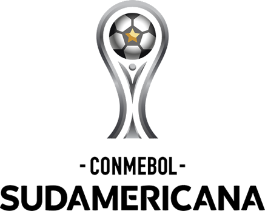

Sport Club Internacional
Sport Club Internacional (mais conhecido simplesmente como Internacional ou Inter, popularmente pelo apelidos de Colorado e Clube do Povo, e cujo acrônimo é SCI) é um clube multiesportivo brasileiro com sede na cidade de Porto Alegre, capital do Rio Grande do Sul. Foi fundado em 4 de abril de 1909 pelos irmãos Poppe, com o objetivo de ser uma instituição democrática e sem preconceitos. Tem como suas cores o vermelho e o branco e seus torcedores são conhecidos como colorados. No futebol é um dos clubes mais vitoriosos do Brasil e das Américas, sendo o terceiro maior campeão internacional do país, ao lado de Flamengo e Cruzeiro, com sete conquistas oficiais, superado somente por Santos e São Paulo. Suas maiores conquistas foram as do Mundial de Clubes da FIFA, em 2006, e os dois títulos da Copa Libertadores da América, em 2006 e 2010, além de uma Copa Sul-Americana de forma invicta, em 2008, dois títulos da Recopa Sul-Americana, em 2007 e 2011, e uma Levain Cup/CONMEBOL (Copa Suruga Bank), em 2009.
Em relação às conquistas em nível nacional, o Internacional é detentor de três títulos do Campeonato Brasileiro (1975, 1976 e 1979), sendo o terceiro de forma invicta, além de uma Copa do Brasil e um Torneio Heleno Nunes. É o primeiro clube da Região Sul a conquistar títulos nacionais e a disputar uma final de Copa Libertadores. Além disso, manteve-se durante vinte e quatro anos seguidos (1975–1998) na liderança do Ranking de Pontos do Campeonato Brasileiro, período em que disputou sete semifinais, três fases finais e quatro finais da competição (1975, 1976, 1979 e 1988). O Internacional ainda é o maior vencedor do Campeonato Gaúcho, tendo conquistado quarenta e cinco vezes a competição, e detém o recorde de maior número de conquistas consecutivas: oito vezes, entre os anos de 1969 e 1976.
Desde 1969, manda suas partidas de futebol no estádio Beira-Rio, de propriedade do clube, com capacidade para mais de cinquenta mil torcedores. O local passou por uma ampla reforma entre 2010 e 2014 para poder sediar partidas da Copa do Mundo de 2014. Além disso, o clube é dono do Ginásio Gigantinho e do Centro de Treinamentos Parque Gigante. O time feminino, por sua vez, joga na sede campestre do SESC, em Porto Alegre, desde 2020. O Internacional é um dos clubes de futebol mais populares do Brasil, com uma torcida estimada em 6,4 milhões de torcedores espalhados pelo país. É clube pioneiro do país no programa sócio-torcedor, lançado em 2003. Em 2020, contava com mais de cento e vinte mil associados. No mesmo ano foi considerado o quinto clube mais valioso do futebol brasileiro, avaliado em 1,749 bilhão de reais, em estudo da empresa Sports Value. Contudo, o clube atingiu o maior déficit anual da história ao fechar 2020 com noventa milhões de reais de prejuízo e vem registrando resultados financeiros negativos desde 2016. O seu presidente atual é Alessandro Barcellos, que assumiu o mandato no início de 2021.
História
1909-1939: Fundação e primeiros títulos
O clube foi fundado em 4 de abril de 1909, pelo jornalista brasileiro Henrique Poppe Leão, junto com seus irmãos Luiz Madeira Poppe e José Eduardo Poppe, que se transferiram de São Paulo para Porto Alegre, em 1901, e encontraram dificuldades para a prática do futebol, uma vez que os principais clubes da cidade, à época, eram restritos a descendentes de alemães. O nome é uma referência à abertura a todas nacionalidades e uma homenagem ao Internacional paulista, do qual os irmãos Poppe fizeram parte. O reconhecimento estadual aconteceu em 7 de setembro de 1927, quando o Inter sagrou-se campeão gaúcho pela primeira vez, ao vencer o Bagé no estádio da Baixada (antigo estádio do Grêmio) por 3–1, em dois tempos de quarenta minutos. Em 1934, o clube conquistou seu segundo título estadual ao vencer por 1–0 o Grêmio Atlético Farroupilha.
Uma nova era se iniciava no Internacional com a inauguração do Estádio dos Eucaliptos, em 1931, no bairro Menino Deus. O novo palco seria cenário de grandes conquistas e da ascensão colorada ao posto de maior clube do sul do Brasil. A estreia não poderia ter sido mais simbólica: vitória por 3 a 0 sobre o maior rival. Cada vez mais identificado como o Clube do Povo, o Inter reforçava sua conexão com as classes populares, tanto nas arquibancadas quanto dentro de campo. Era o tempo de craques como Sylvio Pirillo, talento nascido na Ilhota, e Tupan, vindo da Liga da Canela Preta. O Colorado começava a moldar o lendário Rolo Compressor. Em 1938, apenas um ano após a profissionalização do futebol no estado, o Inter aplicou um sonoro 11 a 0 no Grêmio. O placar, no entanto, foi reduzido para 6 a 0 pelo árbitro Álvaro Silveira.
1940–1974: O Rolo Compressor, projeção nacional e inauguração do Estádio Beira-Rio
O Rolo Compressor foi um time extremamente ofensivo, que durou de 1940 até 1948, conquistando oito estaduais em nove anos. O motivo de tamanha superioridade datava de 1928, ano que o Inter passou a utilizar jogadores negros em seu grupo, prática ainda não adotada pelo rival Grêmio até 1952. Isto acabou fortalecendo a equipe, que não tinha restrições e acabava sempre com os melhores jogadores, além de criar o carinhoso apelido de 'Clube do Povo'. Esta equipe contou com vários dos maiores craques já surgidos no Internacional.
O Estádio Beira-Rio começou a ser construído em 1959 em grande parte com a contribuição da torcida, que trazia tijolos, cimento e ferro para a obra, inclusive do interior. Nesse sentido, havia programas especiais de rádio, para mobilizar os torcedores colorados em todo o Rio Grande do Sul. Consta que até Falcão, mais tarde ídolo colorado, chegou a trazer tijolos para a construção. O Beira-Rio foi inaugurado no domingo de 6 de abril de 1969, sessenta anos e dois dias depois da fundação do clube. No jogo inaugural, contra o Benfica de Portugal, Claudiomiro faz o primeiro gol do Inter no estádio. De repente, um homem grande começou a chorar, e a abanar para a torcida, enquanto dava a volta olímpica no gramado: era Rui Tedesco, o engenheiro que concluiu o Beira-Rio. Emocionados estavam também os dirigentes, mas nada era maior do que o orgulho dos torcedores. Naquela tarde nascia o Gigante da Beira-Rio.
1975–1980: Tricampeonato brasileiro e a primeira final de Libertadores
O time de 1975 começou a ser montado no ano anterior. Em 1974, o clube contratou o goleiro Manga, do Nacional, e o ponteiro-esquerdo Lula, do Fluminense. Das categorias de base, subiram jogadores como Caçapava, Chico Fraga e Batista. Em 1975, chegaria o centroavante Flávio, unindo-se a uma equipe que já contava com jogadores como Figueroa, Falcão, Paulo César Carpegiani e Valdomiro. O Campeonato Brasileiro, que era amplamente dominado pelos paulistas, donos de 12 dos 18 títulos nacionais disputados até então, seja na Taça Brasil, seja no Torneio Roberto Gomes Pedrosa, foi vencido por um clube gaúcho. Ao todo, foram 29 jogos, 58 pontos ganhos, 18 vitórias, oito empates e apenas três derrotas. O prestígio colorado alcançou proporções nacionais antes mesmo de assegurar a taça, em 14 de dezembro. No domingo anterior, o Internacional venceu a "Máquina Tricolor" do Fluminense de Didi e Rivellino em pleno Maracanã. Mesmo com favoritismo ao lado dos cariocas, a equipe de Rubens Minelli aplicou um "nó tático" fora de casa para vencer a semifinal por 2–0, gols de Lula e Carpegiani. O Internacional venceu o duelo contra o Cruzeiro pelo placar de 1–0, no Beira-Rio, na final do Campeonato Brasileiro 1975. Com este resultado, o Internacional sagrou-se campeão. O gol da vitória foi marcado pelo chileno Figueroa, que subiu mais alto que a zaga cruzeirense e desviou de cabeça, marcando o gol em um pequeno rastro da luz do Sol sobre a área, que ficou conhecido como o ''gol iluminado''. Com este resultado, o Internacional ampliou a sequência de quatro jogos sem perder para o adversário no Brasileiro Unificado. O Colorado teve no campeonato o ataque mais positivo, o goleiro menos vazado e o goleador, Flávio, com 16 gols.
A terceira estrela colocada sobre o distintivo do clube encerrou uma década de glórias do Internacional, que além dos três títulos nacionais (1975, 1976 e 1979), também foi marcada pelo octacampeonato gaúcho (venceu todos os regionais de 1969 a 1976). O ano de 1980 foi marcado pelo desmanche daquela equipe do Internacional que encantou o Brasil na década de 1970. O Colorado fez história novamente sendo o primeiro clube do Sul do país a disputar uma final de Copa Libertadores. O Internacional era uma equipe sólida na defesa e com potência ofensiva, manejado pela figura cerebral de Falcão. O adversário era o Nacional do Uruguai, que fez um grande trabalho na final de ida no Beira-Rio, obtendo um importante empate em 0–0. A revanche foi parelha, mas aos 35 minutos, foi quebrada com um gol de Victorino, dando o segundo título da competição à equipe do Nacional.
1981–1991: Títulos amistosos, a Sele-Inter e a 4ª final de Campeonato Brasileiro
Em 1982, o Internacional conquistou o Troféu Joan Gamper eliminando o Barcelona de Maradona no Camp Nou com mais de 100 mil pessoas e batendo o Manchester City pelo placar de 3–1 na final. Tornou-se o primeiro e único clube fora da Europa a conquistar a taça do torneio amistoso, organizado pelo próprio Barcelona desde 1966. Em 1984, o Internacional conquistou o tetracampeonato gaúcho e também o Torneio Heleno Nunes, organizado pela CBF. Em consequência disso, teve seu time titular cedido à seleção brasileira para a disputa das Jogos Olímpicos de 1984. A seleção brasileira, também conhecida como "Sele-Inter", eliminou o Canadá nos pênaltis pelas quartas de final, depois venceu a Itália na semifinal 2–1. Na final, contra a França, o maior público da história dos Jogos Olímpicos (101.799 pessoas) acompanhou o jogo que terminou em 2–0 para a França. Assim, o futebol brasileiro conquistou a sua primeira medalha de prata em Jogos Olímpicos de Verão.
Três anos depois, o Colorado protagonizava mais uma decisão, dessa vez contra o Flamengo pelo Módulo Verde da controversa Copa União de 1987. Após empatar por 1–1 em Porto Alegre e perder por 1–0 no Rio de Janeiro, o clube gaúcho foi vice-campeão do Módulo Verde naquele ano. Na temporada de 1988, o Colorado chegava para mais uma decisão de Campeonato Brasileiro, no qual buscava o tetracampeonato. O adversário foi o Bahia, que o derrotou por 2–1 em Salvador e segurou o empate sem gols em Porto Alegre, culminando em mais um vice-campeonato na história do clube. Com vaga garantida na Copa Libertadores de 1989, o time colorado chegou à semifinal, sendo eliminado pelo Olimpia, do Paraguai, nos pênaltis. A década de 80 ficou marcada por apenas uma conquista nacional, que foi o Torneio Heleno Nunes, realizado em 1984 pela CBF e conquistado pelo Colorado sobre o Bahia, além de quatro conquistas estaduais consecutivas, entre 1981 e 1984. A década de 90 se iniciava com a conquista do 30.º título do Campeonato Gaúcho, em 1991.
Símbolos
Escudo
Originalmente o escudo do Internacional era formado pelas iniciais SCI bordadas em vermelho em um fundo branco. Na década de 50, houve a inversão das cores. A forma atual, com um círculo com o nome do clube e o ano de fundação, foi adotada em 2009.
O escudo circular do Internacional consiste em:
-
As inscrições "SC Internacional" (Sport Club) e "1909" (ano de fundação do clube)
-
Em branco, as iniciais "SCI" entrelaçadas sobre um círculo vermelho
-
Ao longo dos anos, o Internacional acrescentou estrelas, coroa e ramos de louro em seu escudo. Os adornos foram retirados em 2009, ano do centenário do clube.
Uniformes
A primeira camiseta do Internacional era listrada verticalmente em vermelho e branco, gravata nas duas cores, bermudas brancas e meias pretas. Já em 1909 o Inter adota a camisa vermelha, com bermudas e meias pretas - posteriormente trocadas pelas brancas.
Mascote
Para identificar o Inter como um clube do povo, nas páginas esportivas da antiga Folha Desportiva e do jornal A Hora, surgiu, na década de 1950, a figura do "Negrinho". Com o tempo, o Negrinho acabou se convertendo no Saci, aquele que gosta de armar ciladas contra as pessoas, como uma analogia ao que o Internacional faria nos campos de futebol. O mascote entrou oficialmente no estatuto do clube em 2006.
Títulos
| Ícone | Competição | Títulos | Temporadas |
|---|---|---|---|
| Mundiais | |||
| Copa Intercontinental de Clubes da FIFA | 1 | 2006 | |
| Continentais | |||
| Copa Libertadores da América | 2 | 2006 e 2010 | |
|  | Copa Sul-Americana | 1 | 2008 |
| Recopa Sul-Americana | 2 | 2007 e 2011 | |
| Nacionais | |||
| Campeonato Brasileiro | 3 | 1975, 1976 e 1979 | |
| Copa do Brasil | 1 | 1992 | |
| Estaduais | |||
| Campeonato Gaúcho | 46 | 1927, 1934, 1940, 1941, 1942, 1943, 1944, 1945, 1947, 1948, 1950, 1951, 1952, 1953, 1955, 1961, 1969, 1970, 1971, 1972, 1973, 1974, 1975, 1976, 1978, 1981, 1982, 1983, 1984, 1991, 1992, 1994, 1997, 2002, 2003, 2004, 2005, 2008, 2009, 2011, 2012, 2013, 2014, 2015, 2016 e 2025 | |